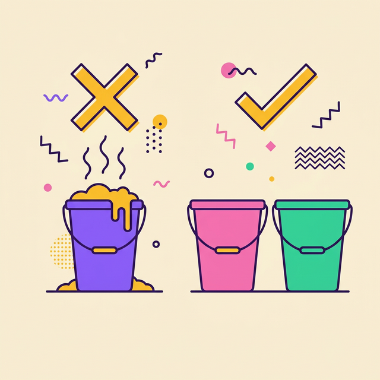
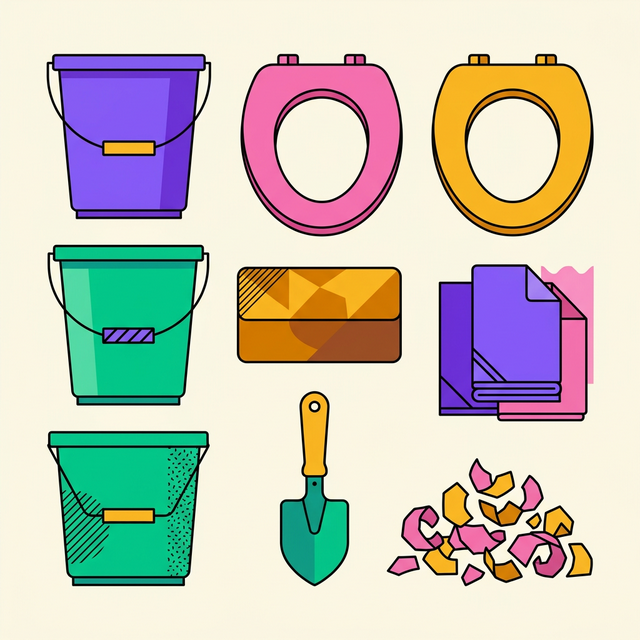

2011 年紐西蘭基督城大地震，催生了這套簡單又有效的應急如廁系統。
2011年2月22日中午12時51分，紐西蘭南島最大城市基督城（Christchurch）發生規模6.3級地震。由於震央接近市中心且震源深度僅5公里，加上正值上班上課的繁忙時段，災情極為嚴重。
這場地震造成185人死亡、多座建築物倒塌，市區約 80% 地區停電，供水與排水系統癱瘓——排泄物的處理成了每天都必須面對的棘手問題。

雙桶系統的關鍵在於將尿液與糞便分開——有效減少體積和臭味，讓內容物更容易儲存和處理。
吸水粉和貓砂能應急，但隨時間推移，物資只會越用越少，生理需求卻不會停止。
屎尿混在一起的傳統方式
乾濕分離的智慧方法
糞便透過堆肥反應逐漸縮水分解，不只體積縮小，臭味也會逐漸降低。
事前準備推薦椰磚——壓縮的椰纖土方塊，只需一袋貓砂大小的空間，就等於準備好四個月份的堆肥材料。
就算椰磚用完了，乾燥的葉子、碎紙、木屑等碳基材都可以替代，讓系統持續運作。不用擔心耗材用盡。
只需要幾項容易取得的材料，就能組建你的雙桶系統。
一個標示為「小便」、另一個標示為「大號」。
可以使用一般的馬桶座墊，也可以購買專門設計來配合塑膠桶的馬桶蓋。
來覆蓋糞便的材料，有多種選擇：

我們提供完整的雙桶系統套組，讓你無需四處張羅材料。
完整的雙桶系統一組包含
由於塑膠桶與椰磚體積較大，無法透過賣貨便寄送，套組將採分批出貨方式：
取貨時會收到：
付款完成後，依收件地址另行寄送：
使用上有任何心得或是疑問，都歡迎加入 Facebook 的雙桶系統社團一起討論。
大家都準備好自己的災時如廁方案，就能確保環境衛生不會受到污染，讓我們健健康康的一起為未來努力。